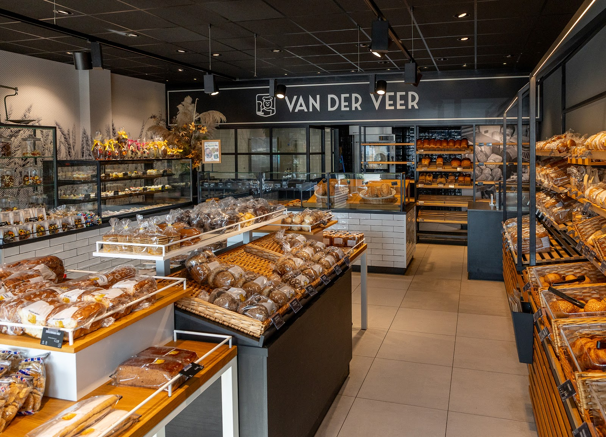
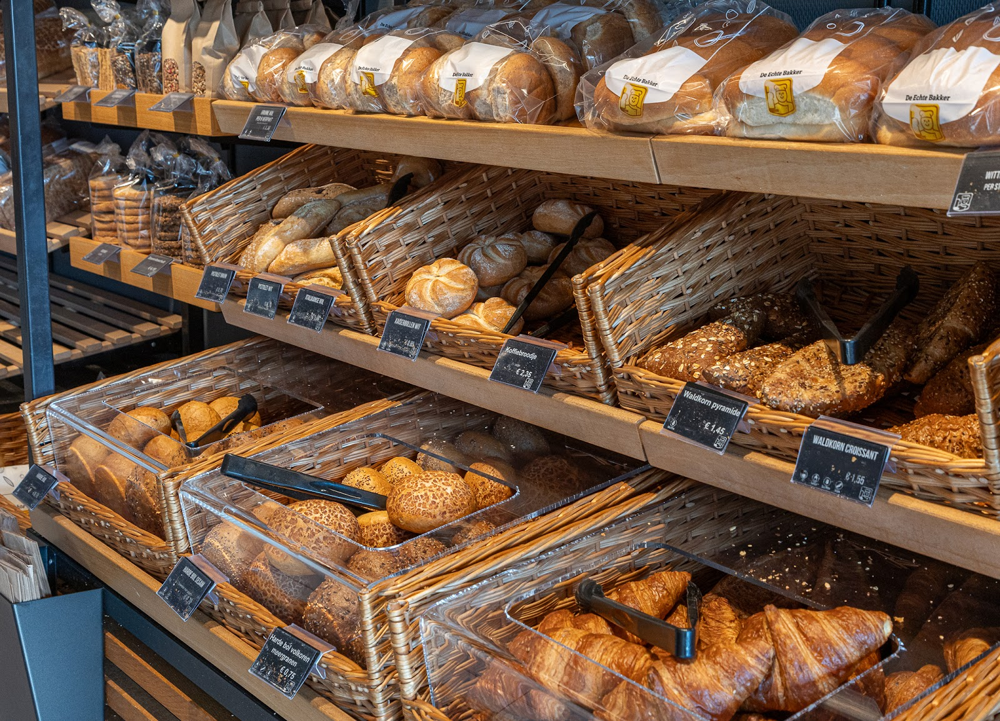
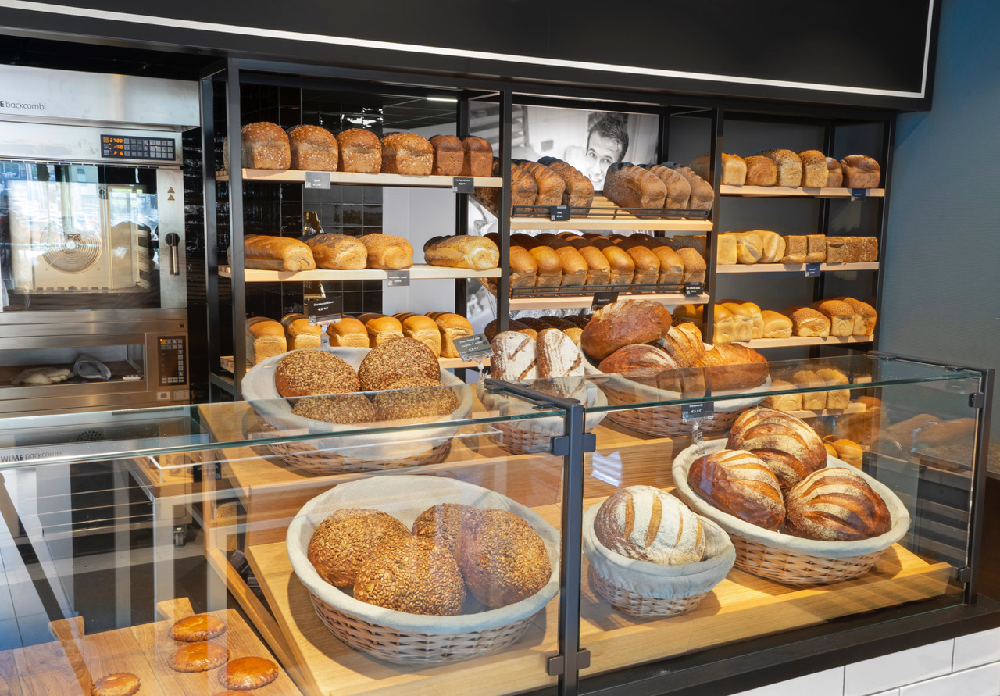
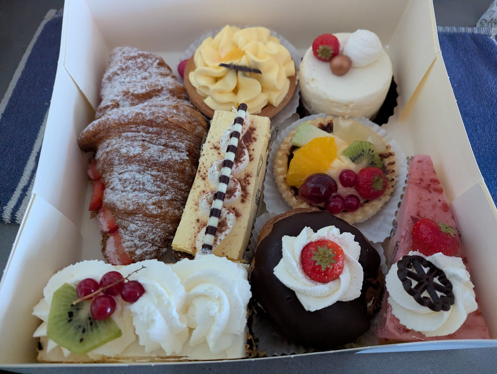
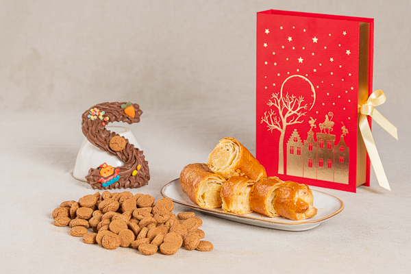
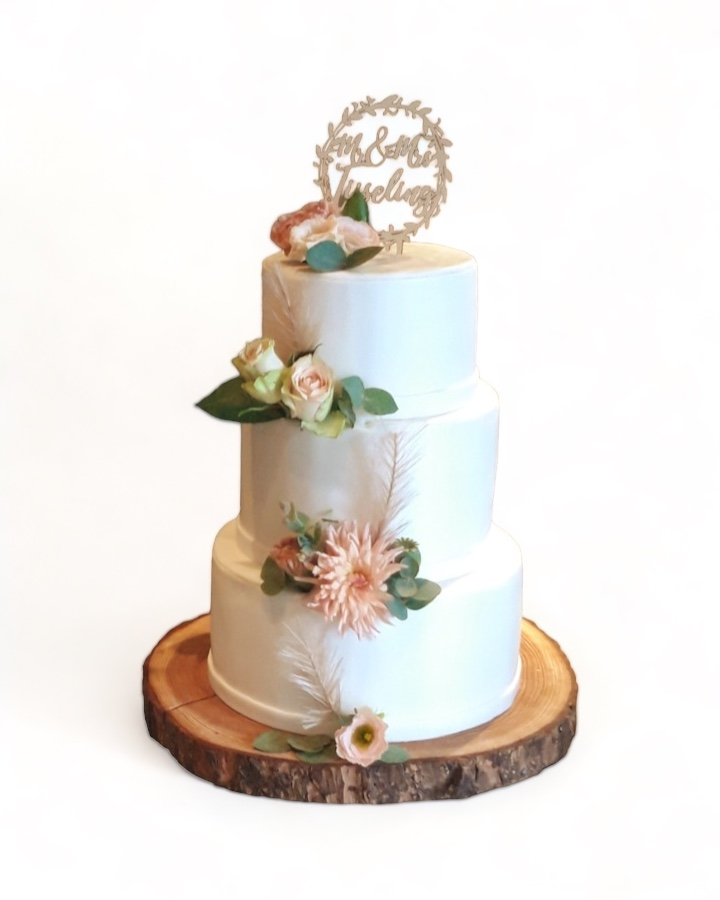
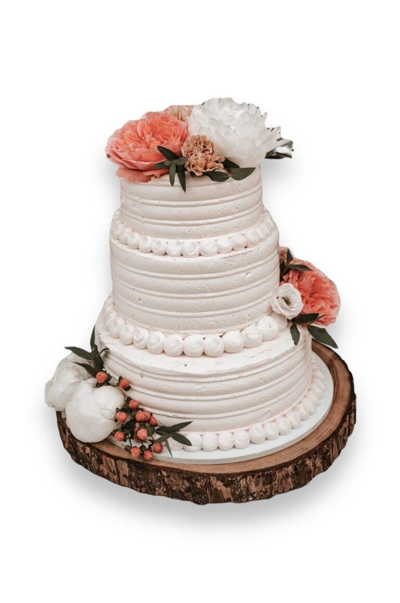
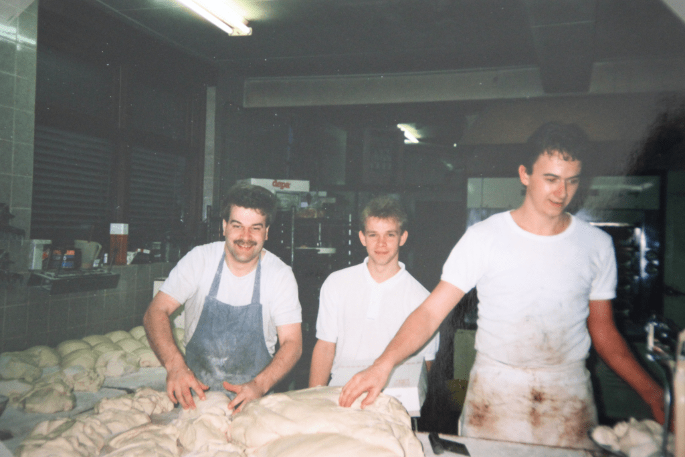
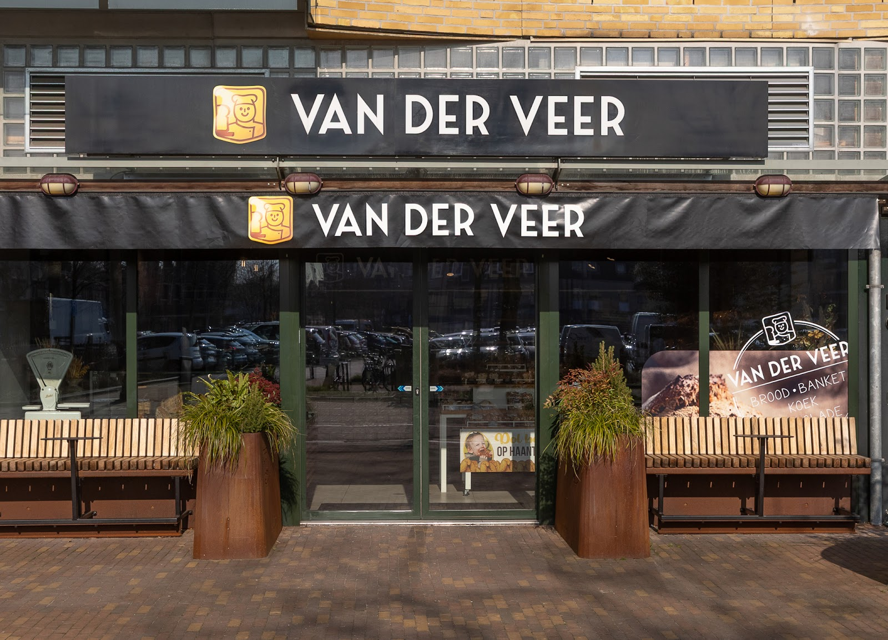

Ambachtelijk genieten, aan de Brouwerstraat
Vers brood, gebak en taarten van uw Echte Bakker, midden in Ede, tegenover het Kuiperplein.
Winkel Ede
Brouwerstraat 116, 6712 AA Ede
Open
Di t/m vr 08:30 tot 16:00 · za 08:00 tot 16:30
Wat er vandaag in de schappen ligt
Van een donker desembrood tot een doos vol gebak. Gebakken zoals een Echte Bakker dat doet. Kies het in de winkel, of bestel online voor morgen.
- Brood
- Gebak en taarten
- Zoete broodjes
- Hartige broodjes
- Koek en cake
- Gelderse Verleiding
- Friese specialiteiten
- Geboorte
- Bruidstaart
Bestellingen voor morgen kunnen tot 17:30 geplaatst worden.




Op zoek naar een leuk Sinterklaasgeschenk?
Letters, pepernoten en banket, mooi verpakt. Bekijk ons assortiment met pakketten in de webshop, of vraag ernaar in de winkel.
Bekijk de pakketten4,7
uit 29 Google-reviews
“Ik koop hier het donkere desembrood en laat het in twee porties inpakken om in te vriezen. Elke keer als ik de zak open maak ruik ik even. De geur is heerlijk! Het lekkerste brood van Ede! Daarbij heel vriendelijke meiden!”
“Nog nooit zulke brosse, heerlijke appelbeignets gegeten! Complimenten! De oliebollen waren overigens ook heerlijk.”
“Heerlijk brood en gebak. Ik ben een fijnproever. Al het brood is hier van ontzettend goede kwaliteit. De smaak en versheid kan gewoon niet beter.”
“De enige "ECHTE BAKKER" in het centrum van Ede. Een schone en gezellige winkel vol met lekkernijen aan de Brouwerstraat tegenover het Kuiperplein.”
“Fijne winkel, ruime keuze en vriendelijk personeel”
Een bruidstaart in drie stappen
Trakteer jullie gasten op een pronkstuk. Zo regelen jullie een bruidstaart om door een ringetje te halen.
-
1
Verliefd
Jullie weten dat de Echte Bakker een goede partij is, maar het is nog te vroeg om ja te zeggen. Neem eerst contact op voor meer informatie.
-
2
Verloofd
Op de koffie bij de bruidstaartbakker. Uitstraling, smaken, wensen: alles komt aan bod. En natuurlijk mag er geproefd worden.
-
3
Getrouwd
Wij hebben elkaar het ja-woord al gegeven: op het afgesproken moment staat jullie bruidstaart er. Jullie hoeven alleen nog te genieten.


Echte Friezen werden echte Barnevelders
In 1990 kwamen Jaap en Aukje van der Veer vanuit Friesland naar Barneveld om een bakkerij over te nemen. ‘We waren te druk om heimwee te krijgen’, vertelt Aukje. Nu staat zoon Remco aan het roer en zet hij met een betrokken team het familiebedrijf voort. Sinds mei 2018 bakken we ook voor Ede.

-
1990
Van Friesland naar Barneveld: Jaap en Aukje nemen Bakkerij Zegers over.
-
1991
De bakkerij wordt Echte Bakker van der Veer en lid van de Stichting Echte Bakkersgilde.
-
1993
Als eerste bakkerij in de regio de fototaart. Die maken we nog steeds op maat.
-
2005
De Gelderse Verleiding wordt bedacht, en raakt bekend tot ver buiten Barneveld.
-
2009
Ondernemer van het Jaar.
-
2011
Certificaat ‘Bakker met Ster’, na een complete doorlichting door een kritische jury.
-
2013
Het lekkerste suikerbrood van Nederland, eerste prijs op de BakkersVakWedstrijden in Drachten.
-
2018
Een tweede winkel: aan de Brouwerstraat in Ede.

Kom langs in Ede
Brouwerstraat 116, 6712 AA Ede
| Maandag | Gesloten |
|---|---|
| Dinsdag | 08:30 tot 16:00 |
| Woensdag | 08:30 tot 16:00 |
| Donderdag | 08:30 tot 16:00 |
| Vrijdag | 08:30 tot 16:00 |
| Zaterdag | 08:00 tot 16:30 |
| Zondag | Gesloten |